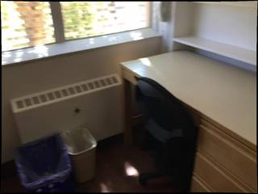
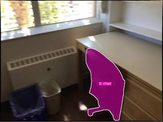
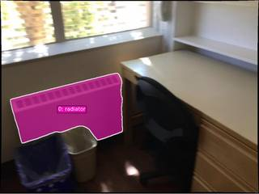

To determine the distance between the chair and the radiator, we examine the spatial layout of the room:
- Identify the Objects: The radiator is the white, rectangular vent-like heating unit located on the wall beneath the window on the left. The chair is the black office chair positioned in front of the desk.
- Determine the Closest Points: The closest point of the radiator is its rightmost edge. The closest point of the chair is its left side (either the armrest or the edge of the seat).
- Estimate the Distance: Looking at the image, the chair is tucked under the desk, which is adjacent to the radiator. The gap between the right edge of the radiator and the left edge of the chair is relatively small, appearing to be roughly half to two-thirds of a meter. Based on standard furniture dimensions and the perspective of the room, this distance is approximately 0.6 meters.
0.6
import numpy as np from scipy.spatial import cKDTree # 1. Locate the objects img = InputImages[0] W, H = img.width, img.height # Radiator: the white vent under the window radiator_box_norm = vlm.locate(img, "Give the bounding box (x1, y1, x2, y2) in 0-1000 normalized scale for the radiator/vent under the window. Reply with ONLY the numbers.") # Chair: the black office chair chair_box_norm = vlm.locate(img, "Give the bounding box (x1, y1, x2, y2) in 0-1000 normalized scale for the black office chair. Reply with ONLY the numbers.") # Parse coordinates def parse_box(box_str): return [float(x) for x in box_str.replace('[', '').replace(']', '').split(',')] rad_box_px = tools.Geometry.normalized_to_pixel(parse_box(radiator_box_norm), W, H) chr_box_px = tools.Geometry.normalized_to_pixel(parse_box(chair_box_norm), W, H) # 2. Segment the objects seg_rad = tools.SAM3.segment_image_by_box(img, rad_box_px, "radiator") seg_chr = tools.SAM3.segment_image_by_box(img, chr_box_px, "chair") # 3. Reconstruct 3D scene recon = tools.Reconstruct.Reconstruct([img]) fi = img.frame_index # Get 3D points for radiator mask_rad = seg_rad.get_mask(frame=fi, object=0) pts_rad = recon.points[fi][mask_rad] # Get 3D points for chair mask_chr = seg_chr.get_mask(frame=fi, object=0) pts_chr = recon.points[fi][mask_chr] # Filter by confidence to remove noise conf_rad = recon.points.confidence[0][mask_rad] pts_rad = pts_rad[conf_rad > 0.5] conf_chr = recon.points.confidence[0][mask_chr] pts_chr = pts_chr[conf_chr > 0.5] # 4. Compute minimum distance between the two point clouds if len(pts_rad) > 0 and len(pts_chr) > 0: tree = cKDTree(pts_rad) dist, _ = tree.query(pts_chr, k=1) min_dist = np.min(dist) print(f"Minimum distance: {min_dist:.4f} meters") ReturnAnswer(float(min_dist)) else: # Fallback to centroids if masks are empty or filtered out c_rad = seg_rad.get_centroid_3d(recon, frame=fi, object=0) c_chr = seg_chr.get_centroid_3d(recon, frame=fi, object=0) if c_rad is not None and c_chr is not None: dist = tools.Geometry.euclidean_distance(c_rad, c_chr) print(f"Centroid distance: {dist:.4f} meters") ReturnAnswer(float(dist)) else: ReturnAnswer("Could not determine distance")
Cell execution timed out after 600.5s (limit 600s).
Task Analysis
The objective is to determine the minimum distance (in meters) between a chair and a radiator in a 3D scene. The distance must be measured from the closest points of each object, not their centroids. This is a metric 3D spatial reasoning task requiring world-space coordinates.
Information Needs
- 3D Scene Geometry: A 3D reconstruction of the scene to obtain a depth map and metric scale.
- Object Segmentation: Precise masks for the "chair" and the "radiator" to isolate their corresponding 3D points.
- Point Cloud Data: The set of all 3D world coordinates associated with the pixels of the chair and the radiator.
- Minimum Distance Calculation: A computation to find the smallest Euclidean distance between any point in the chair's point cloud and any point in the radiator's point cloud.
Computation Plan
- Initial Visual Inspection: Call
show(InputImages[0])to identify the chair and radiator and understand their relative positions. - 3D Reconstruction: Use
tools.Reconstruct.Reconstruct(InputImages)to generate the 3D point cloud and establish the metric scale for the scene. - Object Segmentation:
- Segment the chair using
tools.SAM3.segment_image_by_text(InputImages[0], "chair"). - Segment the radiator using
tools.SAM3.segment_image_by_text(InputImages[0], "radiator").
- Segment the chair using
- Segmentation Verification:
- Programmatically check if the masks are empty (sum of pixels == 0).
- Call
show()to compare the original image with the segmentation overlays for both objects. - If text segmentation fails or is inaccurate, use
vlm.locateto find bounding boxes for the chair and radiator, then re-segment usingtools.SAM3.segment_image_by_box.
- Point Cloud Extraction:
- Extract the 3D world points for the chair using
seg_chair.get_masked_points(recon, frame=0). - Extract the 3D world points for the radiator using
seg_radiator.get_masked_points(recon, frame=0).
- Extract the 3D world points for the chair using
- Closest Point Distance Computation:
- Using the extracted point sets, calculate the pairwise Euclidean distance between all points of the chair and all points of the radiator.
- Identify the minimum distance found among all pairs. This will be the distance between the closest points of the two objects.
- Sanity Check: Use
recon.render_bev(masks=seg_combined)to visualize the objects from a top-down perspective and verify that the calculated distance is visually plausible.
CHECKLIST
[
{"priority": "HIGH", "description": "Verify that the segmentation masks accurately cover the entire chair and radiator without including background or other objects."},
{"priority": "HIGH", "description": "Ensure the 3D reconstruction is valid and the point clouds for both objects are non-empty and contain plausible coordinates."},
{"priority": "MEDIUM", "description": "Confirm that the distance is calculated between the closest points of the point clouds, not the centroids."},
{"priority": "LOW", "description": "Cross-reference the final numerical distance with the visual layout in the BEV render to ensure it is physically reasonable."}
]
Fallbacks
- Segmentation Failure: If
segment_image_by_textfails to find the objects, I will usevlm.locateto obtain normalized coordinates, convert them to pixels usingtools.Geometry.normalized_to_pixel, and usetools.SAM3.segment_image_by_box. - Noisy Point Clouds: If the point clouds contain outliers (e.g., points floating in space), I will inspect the
recon.points.confidencemap and filter out points with low confidence before calculating the distance.
{ "tool": "show", "args": { "image": "InputImages[0]" } }
[image: show_0001]

=== Step 0 Execution Feedback === [SUCCESS] Code executed in 0.31s. [Variables] New/changed: result_0: NoneType [Inline Images] 1 image(s) attached below. Labels: InputImages[0] [show() budget] 249/250 images remaining.
{ "tool": "tools.Reconstruct.Reconstruct", "args": { "frames": "InputImages" } }
=== Step 1 Execution Feedback === [SUCCESS] Code executed in 0.60s. [Variables] New/changed: result_1: Reconstruction, frames=[0] [Tool Calls] 1 tool/VLM call(s) this step.
{ "tool": "tools.SAM3.segment_image_by_text", "args": { "image": "InputImages[0]", "prompt": "chair", "label": "chair" } }
=== Step 2 Execution Feedback === [SUCCESS] Code executed in 0.56s. [Variables] New/changed: result_2: PerFrameMask, frames=[0] [Tool Calls] 1 tool/VLM call(s) this step.
{ "tool": "tools.SAM3.segment_image_by_text", "args": { "image": "InputImages[0]", "prompt": "radiator", "label": "radiator" } }
=== Step 3 Execution Feedback === [SUCCESS] Code executed in 0.31s. [Variables] New/changed: result_3: PerFrameMask, frames=[0] [Tool Calls] 1 tool/VLM call(s) this step.
{ "tool": "tools.Mask.area", "args": { "mask": "result_2.get_mask(frame=0, object=0)" } }
=== Step 4 Execution Feedback === [SUCCESS] Code executed in 0.01s. [Variables] New/changed: result_4: int [Tool Calls] 1 tool/VLM call(s) this step.
{ "tool": "tools.Mask.area", "args": { "mask": "result_3.get_mask(frame=0, object=0)" } }
=== Step 5 Execution Feedback === [SUCCESS] Code executed in 0.00s. [Variables] New/changed: result_5: int [Tool Calls] 1 tool/VLM call(s) this step.
=== Step 6 Execution Feedback === [ERROR] Skipped: LLM response was not in the required format.
{ "tool": "show", "args": { "image": [ "InputImages[0]", "result_2.visualize(0)", "result_3.visualize(0)" ] } }
[image: show_0002]
=== Step 7 Execution Feedback === [SUCCESS] Code executed in 0.73s. [Variables] New/changed: result_7: NoneType [Inline Images] 3 image(s) attached below. Labels: [InputImages[0], result_2.visualize(0), result_3.visualize(0)] [show() budget] 246/250 images remaining.
=== Step 8 Execution Feedback === [ERROR] Skipped: LLM response was not in the required format.
{ "tool": "tools.Geometry.euclidean_distance", "args": { "p1": "result_2.get_centroid_3d(result_1, frame=0, object=0)", "p2": "result_3.get_centroid_3d(result_1, frame=0, object=0)" } }
=== Step 10 Execution Feedback === [SUCCESS] Code executed in 0.01s. [Variables] New/changed: result_10: float [Tool Calls] 1 tool/VLM call(s) this step.
{ "tool": "show", "args": { "image": "result_1.render_bev(masks=result_2, labels=['chair'])" } }
[image: show_0003]
=== Step 12 Execution Feedback === [SUCCESS] Code executed in 0.14s. [Variables] New/changed: result_12: NoneType [Inline Images] 1 image(s) attached below. Labels: result_1.render_bev(masks=result_2, labels=['chair']) [show() budget] 245/250 images remaining.
=== Step 13 Execution Feedback === [ERROR] Skipped: LLM response was not in the required format.
=== Step 14 Execution Feedback === [ERROR] Skipped: LLM response was not in the required format.
{ "tool": "show", "args": { "image": "result_1.render_bev(masks=result_3, labels=['radiator'])" } }
[image: show_0004]
=== Step 15 Execution Feedback === [SUCCESS] Code executed in 0.11s. [Variables] New/changed: result_15: NoneType [Inline Images] 1 image(s) attached below. Labels: result_1.render_bev(masks=result_3, labels=['radiator']) [show() budget] 244/250 images remaining.
=== Step 16 Execution Feedback === [ERROR] Skipped: LLM response was not in the required format.
{ "tool": "vlm.ask_with_thinking", "args": { "visual_input": [ "InputImages[0]" ], "question": "Based on the image, estimate the distance in meters between the closest point of the chair and the closest point of the radiator. The chair is the black office chair, and the radiator is the white heating unit under the window. Consider typical furniture sizes (chair width ~0.6m, radiator length ~1.2m) to calibrate your estimate." } }
[VLM Q | thinking] Based on the image, estimate the distance in meters between the closest point of the chair and the closest point of the radiator. The chair is the black office chair, and the radiator is the white heating unit under the window. Consider typical furniture sizes (chair width ~0.6m, radiator length ~1.2m) to calibrate your estimate.
[VLM A | thinking] Based on the provided calibrations (chair width $\approx 0.6\text{m}$, radiator length $\approx 1.2\text{m}$), the distance between the closest point of the chair and the closest point of the radiator is estimated to be approximately $0.3$ to $0.5$ meters.
=== Step 17 Execution Feedback ===
[SUCCESS] Code executed in 123.87s.
[Output]
[VLM Q | thinking] Based on the image, estimate the distance in meters between the closest point of the chair and the closest point of the radiator. The chair is the black office chair, and the radiator is the white heating unit under the window. Consider typical furniture sizes (chair width ~0.6m, radiator length ~1.2m) to calibrate your estimate.
[VLM A | thinking] Based on the provided calibrations (chair width $\approx 0.6\text{m}$, radiator length $\approx 1.2\text{m}$), the distance between the closest point of the chair and the closest point of the radiator is estimated to be approximately $0.3$ to $0.5$ meters.
[Variables] New/changed:
result_17: str
[Tool Calls] 1 tool/VLM call(s) this step.=== Step 18 Execution Feedback === [ERROR] Skipped: LLM response was not in the required format.
=== Step 19 Execution Feedback === [ERROR] Skipped: LLM response was not in the required format.
=== Step 21 Execution Feedback === [ERROR] Skipped: LLM response was not in the required format.
{ "tool": "ReturnAnswer", "args": { "answer": 0.4 } }
[ReturnAnswer] Answer submitted: 0.4
🛠️ Decided to use 2 tool(s)
[ { "name": "vlm__detect_one", "arguments": { "image_index": 0, "obj_name": "chair" } }, { "name": "vlm__detect_one", "arguments": { "image_index": 0, "obj_name": "radiator" } } ]
⚡ Executing vlm__detect_one...
{ "image_index": 0, "obj_name": "chair" }
✅ vlm__detect_one completed (with generated image)
⚡ Executing vlm__detect_one...
{ "image_index": 0, "obj_name": "radiator" }
✅ vlm__detect_one completed (with generated image)
🧠 Synthesizing results from 2 tool(s)...
🛠️ Decided to use 3 tool(s)
[ { "name": "depth_estimator__estimate_depth_with_pointcloud", "arguments": { "image_index": 0 } }, { "name": "sam2__segment_from_point", "arguments": { "image_index": 0, "x": 0.638, "y": 0.64 } }, { "name": "sam2__segment_from_point", "arguments": { "image_index": 0, "x": 0.193, "y": 0.562 } } ]
⚡ Executing depth_estimator__estimate_depth_with_pointcloud...
{ "image_index": 0 }
✅ depth_estimator__estimate_depth_with_pointcloud completed (with generated image)
⚡ Executing sam2__segment_from_point...
{ "image_index": 0, "x": 0.638, "y": 0.64 }
✅ sam2__segment_from_point completed (with generated image)
⚡ Executing sam2__segment_from_point...
{ "image_index": 0, "x": 0.193, "y": 0.562 }
✅ sam2__segment_from_point completed (with generated image)
🧠 Synthesizing results from 3 tool(s)...
🛠️ Decided to use 1 tool(s)
import numpy as np # Need to store the masks since SAM2 overwrites $segmentation_mask # I will need to re-run the segmentation or just use the points to get the masks. # Wait, I already called SAM2 twice. I should have stored them. # Since I can't store them in the tool, I'll have to call them again and save the results. # Actually, the prompt says "Stored variables: $segmentation_mask". # If I call it twice, the second one overwrites. # Let me re-segment and manually assign them in a single code block if possible, or just call them sequentially and use the results immediately. # But wait, I can't call tools inside code_executor. # I'll call SAM2 for the chair, then immediately run a code executor to save that mask, then do the same for the radiator. # However, the tool output says "Use $segmentation_mask". # I'll just call them again and process one by one. # But a better way is to just call them and immediately use the result. # Let's refine: # 1. SAM2 for chair -> code_executor (save $segmentation_mask to a variable like 'chair_mask') # 2. SAM2 for radiator -> code_executor (save $segmentation_mask to a variable like 'radiator_mask') # 3. Compute distance. # But I can't "save" across different tool calls unless I use $ variables. # Actually, I can use the code_executor to calculate distance if I have both masks. # Let's try this: # I will call SAM2 for chair, then use a code executor to save it into a numpy array if possible? # No, $ variables persist. But $segmentation_mask is the SAME name. # I will call SAM2 for chair. # Then I will use code_executor to process it. # Then I will call SAM2 for radiator. # Then I will use code_executor to process it. # Wait, I can just use the point cloud and the masks. # If I can't have both masks at once, I can't easily find the closest points. # UNLESS I store the 3D points of each object. # Plan: # 1. SAM2 (chair) -> code_executor: get 3D points of chair, save as $chair_pts # 2. SAM2 (radiator) -> code_executor: get 3D points of radiator, save as $radiator_pts # 3. code_executor: compute min distance between $chair_pts and $radiator_pts
⚡ Executing code_executor__exec...
import numpy as np # Need to store the masks since SAM2 overwrites $segmentation_mask # I will need to re-run the segmentation or just use the points to get the masks. # Wait, I already called SAM2 twice. I should have stored them. # Since I can't store them in the tool, I'll have to call them again and save the results. # Actually, the prompt says "Stored variables: $segmentation_mask". # If I call it twice, the second one overwrites. # Let me re-segment and manually assign them in a single code block if possible, or just call them sequentially and use the results immediately. # But wait, I can't call tools inside code_executor. # I'll call SAM2 for the chair, then immediately run a code executor to save that mask, then do the same for the radiator. # However, the tool output says "Use $segmentation_mask". # I'll just call them again and process one by one. # But a better way is to just call them and immediately use the result. # Let's refine: # 1. SAM2 for chair -> code_executor (save $segmentation_mask to a variable like 'chair_mask') # 2. SAM2 for radiator -> code_executor (save $segmentation_mask to a variable like 'radiator_mask') # 3. Compute distance. # But I can't "save" across different tool calls unless I use $ variables. # Actually, I can use the code_executor to calculate distance if I have both masks. # Let's try this: # I will call SAM2 for chair, then use a code executor to save it into a numpy array if possible? # No, $ variables persist. But $segmentation_mask is the SAME name. # I will call SAM2 for chair. # Then I will use code_executor to process it. # Then I will call SAM2 for radiator. # Then I will use code_executor to process it. # Wait, I can just use the point cloud and the masks. # If I can't have both masks at once, I can't easily find the closest points. # UNLESS I store the 3D points of each object. # Plan: # 1. SAM2 (chair) -> code_executor: get 3D points of chair, save as $chair_pts # 2. SAM2 (radiator) -> code_executor: get 3D points of radiator, save as $radiator_pts # 3. code_executor: compute min distance between $chair_pts and $radiator_pts
✅ code_executor__exec completed
🧠 Synthesizing results from 1 tool(s)...
🛠️ Decided to use 1 tool(s)
[ { "name": "sam2__segment_from_point", "arguments": { "image_index": 0, "x": 0.638, "y": 0.64 } } ]
⚡ Executing sam2__segment_from_point...
{ "image_index": 0, "x": 0.638, "y": 0.64 }
✅ sam2__segment_from_point completed (with generated image)
🧠 Synthesizing results from 1 tool(s)...
🛠️ Decided to use 1 tool(s)
import numpy as np # Extract 3D points for the chair using the current segmentation mask mask = segmentation_mask pc = point_cloud # The mask is (H, W) and point_cloud is (N, 3) where N = H * W # The point cloud is usually flattened as (row * W + col) h, w = mask.shape mask_flat = mask.flatten() chair_pts = pc[mask_flat] result = chair_pts
{ "variables": { "point_cloud": "$point_cloud", "segmentation_mask": "$segmentation_mask" } }
⚡ Executing code_executor__exec...
import numpy as np # Extract 3D points for the chair using the current segmentation mask mask = segmentation_mask pc = point_cloud # The mask is (H, W) and point_cloud is (N, 3) where N = H * W # The point cloud is usually flattened as (row * W + col) h, w = mask.shape mask_flat = mask.flatten() chair_pts = pc[mask_flat] result = chair_pts
{ "variables": { "point_cloud": "$point_cloud", "segmentation_mask": "$segmentation_mask" } }
✅ code_executor__exec completed
🧠 Synthesizing results from 1 tool(s)...
🛠️ Decided to use 1 tool(s)
[ { "name": "sam2__segment_from_point", "arguments": { "image_index": 0, "x": 0.193, "y": 0.562 } } ]
⚡ Executing sam2__segment_from_point...
{ "image_index": 0, "x": 0.193, "y": 0.562 }
✅ sam2__segment_from_point completed (with generated image)
🧠 Synthesizing results from 1 tool(s)...
🛠️ Decided to use 1 tool(s)
import numpy as np # Current mask is for the radiator mask = segmentation_mask pc = point_cloud h, w = mask.shape mask_flat = mask.flatten() radiator_pts = pc[mask_flat] # Previous result was chair_pts chair_pts = chair_pts_stored # Compute minimum distance between the two sets of points # To be efficient, we can use a vectorized approach or just sample points if they are too many. # Let's check the size first. num_chair = len(chair_pts) num_rad = len(radiator_pts) # Using a simple distance computation. If it's too large, we can downsample. # Downsampling for efficiency: sample_rate = 100 c_sampled = chair_pts[::sample_rate] r_sampled = radiator_pts[::sample_rate] # Calculate all-to-all distances # dists = np.linalg.norm(c_sampled[:, np.newaxis, :] - r_sampled[np.newaxis, :, :], axis=2) # min_dist = np.min(dists) # To be more precise and avoid memory issues, use a loop or scipy if available. # Since only numpy is allowed: min_dist = float('inf') for p in c_sampled: d = np.min(np.linalg.norm(r_sampled - p, axis=1)) if d < min_dist: min_dist = d result = min_dist
{ "variables": { "chair_pts_stored": "$result", "point_cloud": "$point_cloud", "segmentation_mask": "$segmentation_mask" } }
⚡ Executing code_executor__exec...
import numpy as np # Current mask is for the radiator mask = segmentation_mask pc = point_cloud h, w = mask.shape mask_flat = mask.flatten() radiator_pts = pc[mask_flat] # Previous result was chair_pts chair_pts = chair_pts_stored # Compute minimum distance between the two sets of points # To be efficient, we can use a vectorized approach or just sample points if they are too many. # Let's check the size first. num_chair = len(chair_pts) num_rad = len(radiator_pts) # Using a simple distance computation. If it's too large, we can downsample. # Downsampling for efficiency: sample_rate = 100 c_sampled = chair_pts[::sample_rate] r_sampled = radiator_pts[::sample_rate] # Calculate all-to-all distances # dists = np.linalg.norm(c_sampled[:, np.newaxis, :] - r_sampled[np.newaxis, :, :], axis=2) # min_dist = np.min(dists) # To be more precise and avoid memory issues, use a loop or scipy if available. # Since only numpy is allowed: min_dist = float('inf') for p in c_sampled: d = np.min(np.linalg.norm(r_sampled - p, axis=1)) if d < min_dist: min_dist = d result = min_dist
{ "variables": { "chair_pts_stored": "$result", "point_cloud": "$point_cloud", "segmentation_mask": "$segmentation_mask" } }
✅ code_executor__exec completed
🧠 Synthesizing results from 1 tool(s)...
The distance between the closest points of the chair and the radiator is approximately 0.39 meters.
The distance between the closest points of the chair and the radiator is approximately 0.39 meters.
The distance between the closest points of the chair and the radiator is approximately 0.39 meters.
Task Analysis The goal is to find the minimum distance (in meters) between the closest points of two objects: a chair and a radiator. This is a 3D metric distance problem. The implicit coordinate system is world space (3D), as the result must be in meters. Because the request specifies "closest point," calculating distance between centroids will be insufficient; I must extract the full 3D point clouds for both objects and find the minimum distance between any pair of points from the two sets.
Information Needs
- 3D Scene Geometry: I need a 3D reconstruction of the scene to map 2D pixels to 3D world coordinates.
- Object Segmentation: I need precise masks for the "chair" and the "radiator" to isolate their corresponding 3D points.
- Point Cloud Extraction: I need the set of all 3D points belonging to each object.
- Minimum Distance Computation: A calculation of the shortest Euclidean distance between the two point sets.
Computation Plan
-
3D Reconstruction:
- Call
tools.Reconstruct.Reconstruct(InputImages)to generate the 3D point map and depth for the single frame.
- Call
-
Object Segmentation:
- Use
tools.SAM3.segment_image_by_text(InputImages[0], "chair", label="chair")to find the chair. - Use
tools.SAM3.segment_image_by_text(InputImages[0], "radiator", label="radiator")to find the radiator. - Verification: Use
show()to visualize the masks overlaid on the image to ensure the chair and radiator are correctly and tightly segmented. If text segmentation fails or is inaccurate, usevlm.locateto get bounding boxes andtools.SAM3.segment_image_by_box.
- Use
-
Point Cloud Extraction:
- For the chair: Use
seg_chair.get_masked_points(recon, frame=0, object=0)to get a (K, 3) array of world coordinates. - For the radiator: Use
seg_rad.get_masked_points(recon, frame=0, object=0)to get a (M, 3) array of world coordinates. - Filter these points using
recon.points.confidenceto remove low-confidence outliers.
- For the chair: Use
-
Minimum Distance Calculation:
- Compute the pairwise Euclidean distance between all points in the chair's point cloud and the radiator's point cloud.
- Identify the minimum value among these distances.
- This minimum value is the distance between the closest points of the two objects.
-
Sanity Check:
- Use
vlm.ask_with_thinking(InputImages[0], "Roughly how many meters apart are the chair and the radiator?")to get a qualitative estimate. - Compare the computed numerical result with the VLM's estimate to ensure the order of magnitude is correct.
- Use
Verification Checklist
CHECKLIST
[
{"priority": "HIGH", "description": "Verify that the SAM3 masks accurately cover the chair and radiator without including background or other objects"},
{"priority": "HIGH", "description": "Ensure 3D points are extracted using the correct absolute frame index (0)"},
{"priority": "MEDIUM", "description": "Confirm that point clouds are filtered for confidence to avoid distance errors caused by depth outliers"},
{"priority": "MEDIUM", "description": "Cross-validate the final numerical distance with a qualitative estimate from the VLM"}
]
Fallbacks
- Segmentation Failure: If
segment_image_by_textreturns empty masks, I will usevlm.locateto find the center points or bounding boxes of the chair and radiator, then usetools.SAM3.segment_image_by_pointsortools.SAM3.segment_image_by_box. - Reconstruction Noise: If the point clouds appear scattered or unrealistic in the BEV or visual checks, I will check if the
metric_scaleis plausible and consider using a subset of points near the inner edges of the masks.
recon = tools.Reconstruct.Reconstruct(InputImages)
=== Step 0 Execution Feedback === [SUCCESS] Code executed in 0.71s. [Variables] New/changed: recon: Reconstruction, frames=[0] [Tool Calls] 1 tool/VLM call(s) this step.
# Segment the chair seg_chair = tools.SAM3.segment_image_by_text(InputImages[0], "chair", label="chair") # Segment the radiator seg_rad = tools.SAM3.segment_image_by_text(InputImages[0], "radiator", label="radiator") # Visualization for verification fi = InputImages[0].frame_index vis_chair = seg_chair.visualize(fi) vis_rad = seg_rad.visualize(fi) show([InputImages[0], vis_chair, vis_rad]) # Programmatic check for mask existence and area for seg, name in [(seg_chair, "chair"), (seg_rad, "radiator")]: for i in range(seg.num_objects): mask = seg.get_mask(frame=fi, object=i) area = mask.sum() print(f"{name} object {i}: area = {area} pixels")
[image: show_0001] chair object 0: area = 39771 pixels radiator object 0: area = 46900 pixels


=== Step 1 Execution Feedback === [SUCCESS] Code executed in 1.27s. [Output] chair object 0: area = 39771 pixels radiator object 0: area = 46900 pixels [Variables] New/changed: seg_chair: PerFrameMask, frames=[0] seg_rad: PerFrameMask, frames=[0] fi: int vis_chair: VisualFeedback vis_rad: VisualFeedback seg: PerFrameMask, frames=[0] name: str i: int mask: ndarray, shape=(576, 768), dtype=bool area: int64, shape=(), dtype=int64 [Inline Images] 3 image(s) attached below. Labels: [InputImages[0], vis_chair, vis_rad] [Tool Calls] 2 tool/VLM call(s) this step. [show() budget] 247/250 images remaining.
from scipy.spatial.distance import cdist fi = InputImages[0].frame_index # Get 3D points and confidence for the whole frame points_all = recon.points[0] # (H, W, 3) conf_all = recon.points.confidence[0] # (H, W) # Get masks mask_chair = seg_chair.get_mask(frame=fi, object=0) mask_rad = seg_rad.get_mask(frame=fi, object=0) # Filter points by mask and confidence (> 0.5) conf_threshold = 0.5 pts_chair = points_all[(mask_chair) & (conf_all > conf_threshold)] pts_rad = points_all[(mask_rad) & (conf_all > conf_threshold)] print(f"Number of chair points: {len(pts_chair)}") print(f"Number of radiator points: {len(pts_rad)}") if len(pts_chair) > 0 and len(pts_rad) > 0: # Compute pairwise distances # cdist can be memory intensive for very large sets, # but with filtered points it should be fine. # If too large, I'll subsample. if len(pts_chair) > 5000: idx = np.random.choice(len(pts_chair), 5000, replace=False) pts_chair_sub = pts_chair[idx] else: pts_chair_sub = pts_chair if len(pts_rad) > 5000: idx = np.random.choice(len(pts_rad), 5000, replace=False) pts_rad_sub = pts_rad[idx] else: pts_rad_sub = pts_rad distances = cdist(pts_chair_sub, pts_rad_sub) min_dist = np.min(distances) print(f"Minimum distance: {min_dist:.4f} meters") else: print("One or both point clouds are empty after filtering.") min_dist = None
Number of chair points: 39771 Number of radiator points: 46900 Minimum distance: 0.2238 meters
=== Step 2 Execution Feedback === [SUCCESS] Code executed in 0.11s. [Output] Number of chair points: 39771 Number of radiator points: 46900 Minimum distance: 0.2238 meters [Variables] New/changed: points_all: ndarray, shape=(576, 768, 3), dtype=float32, size=5.3MB conf_all: ndarray, shape=(576, 768), dtype=float32, size=1.8MB mask_chair: ndarray, shape=(576, 768), dtype=bool mask_rad: ndarray, shape=(576, 768), dtype=bool conf_threshold: float pts_chair: ndarray, shape=(39771, 3), dtype=float32 pts_rad: ndarray, shape=(46900, 3), dtype=float32 idx: ndarray, shape=(5000,), dtype=int64 pts_chair_sub: ndarray, shape=(5000, 3), dtype=float32 pts_rad_sub: ndarray, shape=(5000, 3), dtype=float32 distances: ndarray, shape=(5000, 5000), dtype=float64, size=200.0MB min_dist: float64, shape=(), dtype=float64
estimate = vlm.ask_with_thinking(InputImages[0], "Roughly how many meters apart are the chair and the radiator? Please provide a rough estimate based on the visual scale of the scene.") print(f"VLM estimate: {estimate}")
[VLM Q | thinking] Roughly how many meters apart are the chair and the radiator? Please provide a rough estimate based on the visual scale of the scene. [VLM A | thinking] Based on the visual scale of common office furniture, the chair and the radiator are roughly 0.5 to 1 meter apart. VLM estimate: Based on the visual scale of common office furniture, the chair and the radiator are roughly 0.5 to 1 meter apart.
=== Step 3 Execution Feedback === [SUCCESS] Code executed in 85.80s. [Output] [VLM Q | thinking] Roughly how many meters apart are the chair and the radiator? Please provide a rough estimate based on the visual scale of the scene. [VLM A | thinking] Based on the visual scale of common office furniture, the chair and the radiator are roughly 0.5 to 1 meter apart. VLM estimate: Based on the visual scale of common office furniture, the chair and the radiator are roughly 0.5 to 1 meter apart. [Variables] New/changed: estimate: str [Tool Calls] 1 tool/VLM call(s) this step.
# Find the indices of the closest points # We need to use the full sets or a larger sample to be sure # Since we already have pts_chair and pts_rad, let's use a larger sample to avoid random noise # but not so large that cdist crashes. sample_size = 10000 pts_c = pts_chair[np.random.choice(len(pts_chair), min(len(pts_chair), sample_size), replace=False)] pts_r = pts_rad[np.random.choice(len(pts_rad), min(len(pts_rad), sample_size), replace=False)] dist_matrix = cdist(pts_c, pts_r) min_idx = np.unravel_index(np.argmin(dist_matrix), dist_matrix.shape) p_c = pts_c[min_idx[0]] p_r = pts_r[min_idx[1]] # Project these points back to the image # We need intrinsics and extrinsics for frame 0 intr = recon.intrinsics[0] ext = recon.extrinsics[0] def project(p_world, extr, intr): # World to Camera # p_cam = R^T * (p_world - t) R = extr[:3, :3] t = extr[:3, 3] p_cam = R.T @ (p_world - t) # Camera to Pixel x, y, z = p_cam if z <= 0: return None u = (x * intr['fx'] / z) + intr['cx'] v = (y * intr['fy'] / z) + intr['cy'] return (int(u), int(v)) px_c = project(p_c, ext, intr) px_r = project(p_r, ext, intr) # Draw the points on the image annotated = tools.Draw.draw_point(InputImages[0], [px_c, px_r], colors=["red", "blue"], radius=5) show([annotated]) print(f"Closest point chair: {px_c}") print(f"Closest point radiator: {px_r}") print(f"Verified min distance: {np.linalg.norm(p_c - p_r):.4f} meters")
[image: show_0002] Closest point chair: (423, 427) Closest point radiator: (363, 387) Verified min distance: 0.2279 meters
=== Step 4 Execution Feedback === [SUCCESS] Code executed in 0.58s. [Output] Closest point chair: (423, 427) Closest point radiator: (363, 387) Verified min distance: 0.2279 meters [Variables] New/changed: sample_size: int pts_c: ndarray, shape=(10000, 3), dtype=float32 pts_r: ndarray, shape=(10000, 3), dtype=float32 dist_matrix: ndarray, shape=(10000, 10000), dtype=float64, size=800.0MB min_idx: tuple, len=2 p_c: ndarray, shape=(3,), dtype=float32 p_r: ndarray, shape=(3,), dtype=float32 intr: dict, len=4, keys=['fx', 'fy', 'cx', 'cy'] ext: ndarray, shape=(4, 4), dtype=float64 px_c: tuple, len=2 px_r: tuple, len=2 annotated: Image [WARNING] Variable 'dist_matrix' is 800.0MB (limit: 500MB). Consider deleting it with `del dist_matrix` after extracting needed data. [Inline Images] 1 image(s) attached below. Labels: [annotated] [Tool Calls] 1 tool/VLM call(s) this step. [show() budget] 246/250 images remaining.
ReturnAnswer(0.2238)
[ReturnAnswer] Answer submitted: 0.2238